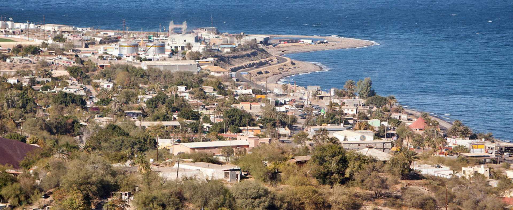

Somos una empresa con operaciones sustentables y con una alta conciencia en la preservación de nuestro entorno
Oficinas Administrativa
Representamos el primer lugar de inversión extranjera directa en el estado de Baja California Sur.

Santa Tosalía BCS
Promovemos el desarrollo de la comunidad donde operamos, a través del impulso de opciones productivas y desarrollo de proyectos sociales y comunitario.
Áreas Estratégicas
Somos una empresa con operaciones sustentables y con una alta conciencia en la preservación de nuestro entorno
El proyecto denominado El Boleo se localiza en la costa este de la Península de Baja California, cerca del puerto y poblado de Santa Rosalía, municipio de Mulegé, en el estado de Baja California Sur, México. Las coordenadas geográficas del proyecto son de Latitud 27º14’ a 27º25’ Norte y de Longitud 112º14’ a 112º22’ Oeste.
Las concesiones mineras que cubren los depósitos de cobre-cobalto-zinc son propiedad de Minera y Metalúrgica del Boleo S.A.P.I. de C.V.
La MMB consiste en varias minas de superficie y subterráneas en desarrollo.
Para el desarrollo de minas superficiales, Minera Boleo utiliza técnicas y equipos de extracción a cielo abierto, como camiones, excavadora y cargadores frontales, para toda su extracción de mineral y desechos.
El método de minería subterránea en MMB es la minería de corta pared o la minería de retirada teniendo en cuenta las condiciones geológicas y el mineral extraído se trae a la superficie mediante un sistema de cinta transportadora. El mineral de las minas tanto superficiales como subterráneas se transporta en camión a las áreas de trituración de la planta para el siguiente proceso.
La planta procesadora se diseña para producir y tratar 3.1 mt/año de insumos y la producción promedio esperada, para los primeros años de operación es:
Hasta 56 700 t/año de Cátodo de Cobre
Hasta 1 700 t/año de Cátodo de Cobalto
Hasta 25 000 t/año de sal monohidratada de Sulfato de Zinc
El proyecto tiene una vida útil de 25 años, como mínimo, y generará un desarrollo socioeconómico importante en la región.
Producción Minera Nacional a través de MMB
- Único productor primario de cobalto metálico en México
- Participación del 11.81% de la producción minera nacional de cobre
- Con las expectativas de producción, MMB generaría un incremento del 13.40% de la producción minera nacional de cobre